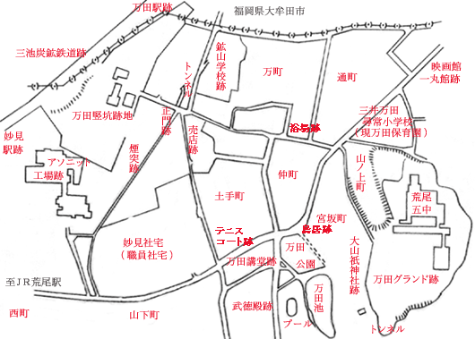

三井三池炭鉱万田坑周辺図
熊本県荒尾市による昭和35年10月1日現在「行政区別人口および世帯数一覧表」によると、
万田東社宅 世帯数303 人口1459（男740、女719）
万田西社宅 世帯数329 人口1725（男837、女888）
とある。
万田東社宅がどの範囲までを示しているのか知らないが、職員社宅と呼ばれていた妙見社宅の他、山下町、土手町、仲町、 宮坂町、山ノ上町、万町、通町に炭鉱住宅が所在していた。万田西社宅跡は道路になり、万町及び通町は住宅街となって、 その他の跡地はいまだ荒地と化したままになっている。
（地図上をクリックしてみてください）

BACK
NEXT